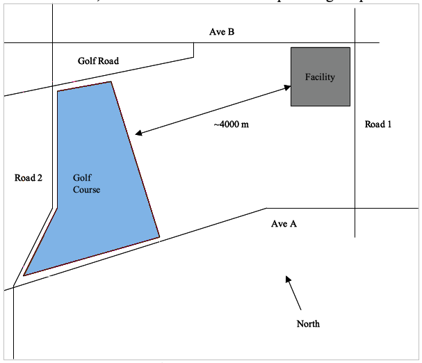
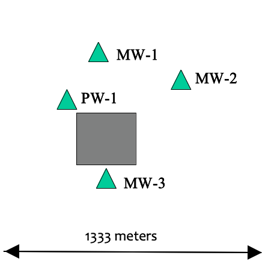
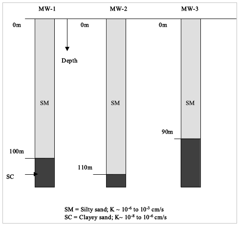
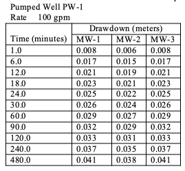

USGS MOC Project 3 (Site Investigation/Remediation Design)¶
You are developing a response plan for a potential failure of the materials handling containment liner at plant XYZ.
Area Map¶
The figure below depicts the general area where the plant operates. The golf course is about 4000 meters west of the plant boundary. The golf course opened about 1980, around the same time as the plant began operations.

Plant Map¶
The figure below is a detail map of the plant itself showing the locations of monitoring wells and the materials handling area.

Drilling Logs¶
Three monitoring wells were installed when the plant was built and the geologic logs are shown on the figure below.

Water Well¶
Some time after the plant began operations a fourth well was installed (PW-1) to provide process water for the plant, but it has never been used. During development of the well a pumping test was conducted and the data from that test are tabulated below.

Monitoring Data¶
The monitoring wells are monitored quarterly, but data are not saved unless there is a detect. The plant safety officer was able to provide the nitrate data tabulated below. Static long-term water levels in the wells are 81.0m, 80.0m, and 85.0m for MW-1, MW-2, and MW-3, respectively.
Date |
MW-1 |
MW-2 |
MW-3 |
|---|---|---|---|
1-21-82 |
0.0 |
– |
– |
6-30-82 |
0.0 |
– |
– |
2-21-83 |
0.0 |
– |
– |
6-29-83 |
0.0 |
– |
– |
2-20-84 |
0.0 |
– |
– |
6-30-84 |
0.0 |
– |
– |
2-19-85 |
0.0 |
– |
– |
6-18-85 |
0.0 |
– |
– |
2-20-86 |
0.0 |
– |
– |
6-21-86 |
0.0001 |
0.0001 |
– |
7-21-86 |
– |
0.106 |
– |
7-22-86 |
– |
– |
0.105 |
8-21-86 |
– |
7.015 |
7.01 |
9-21-86 |
– |
53.46 |
53.5 |
10-21-86 |
– |
80.37 |
80.4 |
2-20-87 |
99.0 |
– |
– |
2-21-88 |
99.95 |
– |
– |
6-21-88 |
99.95 |
– |
– |
2-20-89 |
99.95 |
– |
– |
6-21-89 |
99.95 |
– |
– |
2-20-90 |
99.95 |
– |
– |
6-22-90 |
99.95 |
– |
– |
Using these data determine:
The concentrations at the plant boundary of (1) a radioactive compound that does not interaction with aquifer, but does decay (use the half-life of radioactive iodine as a surrogate for the decay rate of the compound) (2) a soluible compound (assume it does not decay, but does interact with the aquifer; R=1.75), and a chloride tracer (conservative) resulting from a potential catastrophic failure and release at the materials handling area. Assume the failure releases 1 kg of each material distributed over the area of the materials handling facility.
Design a line of capture wells along the boundary to capture a 100kg release of any of the above compounds. The plan is to install the capture wells, but not operate unless the monitoring wells indicate a spill has occurred. What contaminant level is required in the monitoring wells to initiate a restoration response if the MCL of the materials is 100 mg/L?
Hints¶
All the data are useful – for instance the nitrate data is essentially a tracer from the golf course (fertilizer), thus is can provide estimates of groundwater velocity and dispersivities. The pumping test can be used to infer transmissivity and informed by the drilling logs give a useable estimate of hydraulic conductivity. The drilling logs give thickness, etc. The data will not all agree and you will need to use some judgement on how to incorporate the data into the model. Your list of assumptions is very important in this exercise, be sure you clearly state each assumption used as you proceede.
Report Format¶
Submit your response as a short report using the suggested format below:
Front matter:
Title Page: Title of the Report Author(s) Date Affiliation/Institution
Table of Contents: List of Sections and Subsections with Page Numbers
List of Figures and Tables: Numbered List of Figures and Tables with Captions and Page Numbers
Executive Summary: A concise summary of the main objectives, methodology, key findings, and recommendations. This section should provide a quick overview of the report’s main points.
Introduction: Background and context of the groundwater modeling study Objectives and goals of the modeling project. Scope and limitations of the study.
Literature Review: Review of relevant literature and prior research on the study area, hydrogeology, and similar modeling studies. Explanation of key concepts and theories related to groundwater modeling.
Study Area and Data Collection: Description of the study area, including its geographical location and hydrogeological characteristics. Details on data collection methods, sources, and types of data used (e.g., well data, geophysical data, hydrological data).
Conceptual Model: Development of the conceptual model, including hydrogeological setting, boundary conditions, and initial conditions. Explanation of the conceptual model’s assumptions and simplifications.
Numerical Modeling Approach: Explanation of the numerical modeling software and methodology used. Description of the mathematical equations governing groundwater flow, solute transport, or any relevant processes.
Model Calibration (not enough detail is provided in problem statement, so feel free to skip entirely): Details on the calibration process, including parameter estimation and model adjustments to match observed data. Presentation of calibration results and goodness-of-fit statistics.
Model Validation (not enough detail is provided in problem statement, so feel free to skip entirely): Presentation of validation results to demonstrate the model’s accuracy and reliability. Discussion of how well the model reproduces observed groundwater behavior.
Scenario Analysis: Presentation of model simulations for different scenarios, including various input conditions and potential changes in the study area. Discussion of the implications of different scenarios on groundwater behavior.
Results and Discussion: Detailed presentation of modeling results, including maps, graphs, and tables. Interpretation of the results in the context of the study’s objectives. Discussion of any trends, anomalies, or significant findings.
Conclusions: Summary of the key findings and their implications. Discussion of the study’s contributions to the field and its relevance to decision-making.
Recommendations: Specific recommendations for groundwater management, remediation, or further research based on the modeling results.
References: List of all sources and literature cited in the report, following a standard citation style.
Appendices: Supplementary material such as data tables, model input files, detailed modeling parameters, and additional figures.
Remember to use clear and concise language throughout the report, and include appropriate figures, tables, and citations to support your findings and analysis. Additionally, make sure the report is well-organized and follows a logical flow of information from introduction to conclusions.